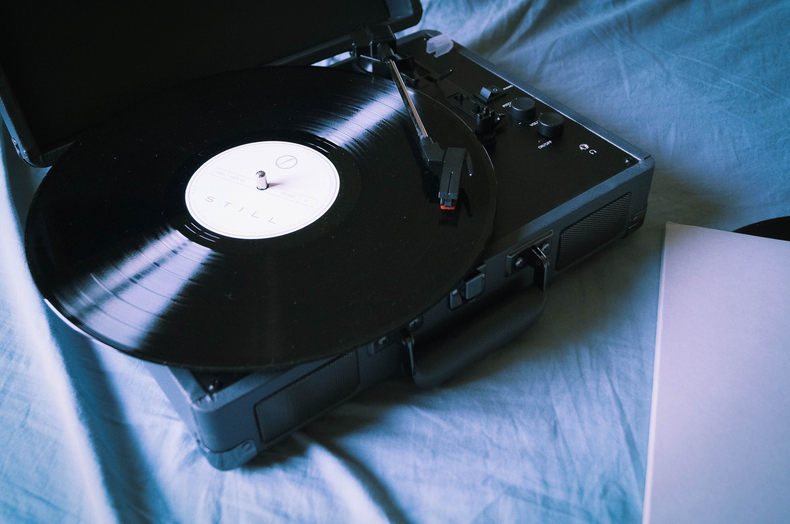

Welcome to my rotation
On Repeat is a guide to some of my favorite music. I created this website to share artists I enjoy and help other people discover something new.
My favorites include Drake, Hunxho, NoCap, Clara La San, and PARTYNEXTDOOR. This site explores their music through artist introductions, genre guides, and listening recommendations.

Find your way in.
Three ways to explore the rotation.